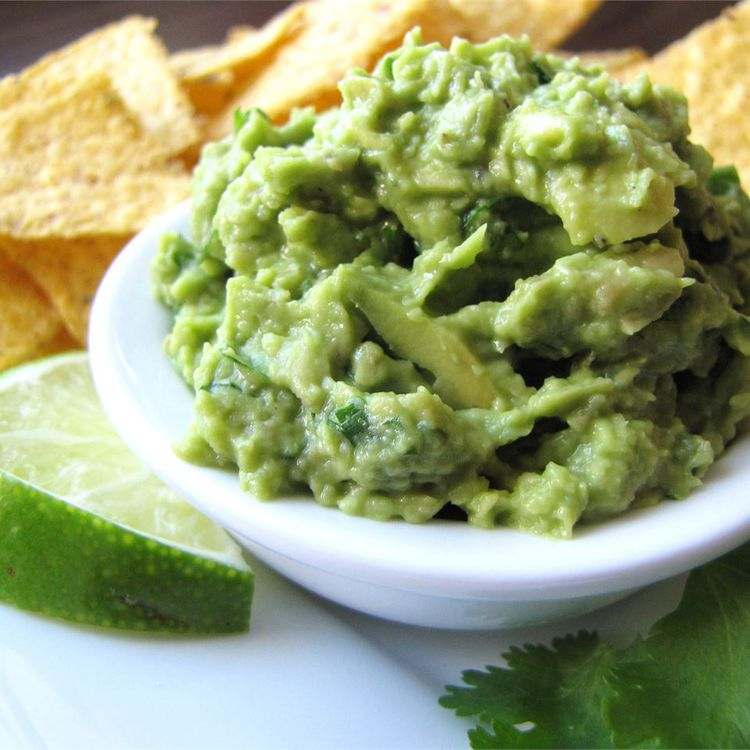

Guacamole Recipe

Ingredients
- 5 avocados - peeled, pitted, and mashed
- 2 tablespoons fresh lemon juice
- 3/4 cup minced green onion
- 1/2 cup minced fresh cilantro
- salt and pepper, to taste
Steps
- Stir together the avocado and lemon juice in a serving bowl; add the green onion and cilantro; mix well. Season with salt and pepper. Serve immediately or store covered in refrigerator with avocado pits in the bowl to keep from browning.